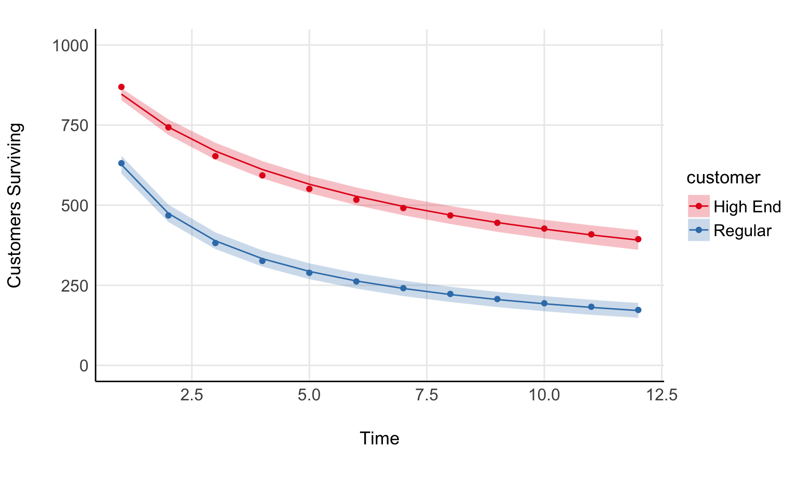

Code
library(tidyverse)
library(cmdstanr)library(tidyverse)
library(cmdstanr)The shifted beta geometric model (sBG) is a model that is used to forecast retention/survival of users in contractual settings (think netflix, disney plus, tinder gold, etc). The model is quite simple and posits:
Excel isn’t a great tool for fitting models, so Let’s write this in Stan.
The two things we need are the probability density function and the survival function. Fader and Hardie provide these in their paper. Mathematically, the probability density and survival function are
\[ P(T=t \mid \alpha, \beta) = \dfrac{B(\alpha+1, \beta+t-1)}{B(\alpha, \beta)} \>,\]
\[ S(T=t \mid \alpha, \beta) = \dfrac{B(\alpha, \beta+t)}{B(\alpha, \beta)} \>. \] Here, \(B(\alpha, \beta)\) is the beta function and not the beta distribution (I made that mistake early). Stan operates on the log scale, and so we’ll have to take the log of these. Stan has a log beta function called lbeta so we’ll use that in our functions for the density and survival function.
functions{
real sbg_lpdf(real time, real alpha, real beta){
return lbeta(alpha+1, beta+time-1) - lbeta(alpha, beta);
}
real sbg_lccdf(real time, real alpha, real beta){
return lbeta(alpha, beta + time) - lbeta(alpha, beta);
}
}The data we need to fit the model include:
We’ll also include an array of times at which to estimate the survival curve
data{
// Fitting the model
int N;
int n_total;
array[N] int lost;
array[N] real time;
// Making Predictions
int N_pred;
array[N_pred] real pred_times;
}Later, we’ll need the last time point we observed customers who haven’t churned. This is the truncation time
transformed data{
real truncation_time = max(time);
}All that is left to do is specify parameters, write the model block, and generate predictions for our survival curve. The likelihood computations are shown in the paper I referenced, so I’ll let you read that if you’re interested
parameters{
real<lower=0> alpha;
real<lower=0> beta;
}
model{
alpha ~ cauchy(0, 1);
beta ~ cauchy(0, 1);
for(i in 1:N){
target += lost[i] * sbg_lpdf(time[i]| alpha, beta);
}
target += (n_total - sum(lost)) * sbg_lccdf(truncation_time| alpha, beta);
}
generated quantities{
array[N_pred] real expected_surviving;
for(i in 1:N_pred){
expected_surviving[i] = exp(sbg_lccdf(pred_times[i]| alpha, beta));
}
}Fader and Hardie provide an example in their appendix for fitting the model. We’ll use that data to check our fit. Let’s take a look at that data now
library(cmdstanr)
library(tidyverse)
library(tidybayes)
stan_data <- list(
active = c(863 ,743 ,653 ,593 ,551 ,517 ,491),
lost = c(131, 126 ,90 ,60 ,42 ,34 ,26),
N = 7,
n_total = 1000,
time = 1:7,
N_pred = 25,
pred_times = seq(0, 12, length.out=25)
)
surv_plot <- tibble(time = stan_data$time, active=stan_data$active) %>%
ggplot(aes(time, active)) +
geom_point() +
geom_line() +
ylim(c(0, 1000)) +
ylab('Customers Surviving') +
xlab('Time') +
see::theme_modern() +
theme(aspect.ratio = 1/1.61,
panel.grid.major = element_line())
surv_plot
Now, let’s compare with the fit
model <- cmdstanr::cmdstan_model('sbg.stan')
fit <- model$sample(stan_data, refresh = 0)Running MCMC with 4 sequential chains...
Chain 1 finished in 0.0 seconds.
Chain 2 finished in 0.0 seconds.
Chain 3 finished in 0.0 seconds.
Chain 4 finished in 0.0 seconds.
All 4 chains finished successfully.
Mean chain execution time: 0.0 seconds.
Total execution time: 0.5 seconds.pred_times <- tibble(pred_times=stan_data$pred_times, i = seq_along(pred_times))
fit_predict <- fit %>%
spread_draws(expected_surviving[i]) %>%
mutate(expected_surviving = expected_surviving * 1000) %>%
mean_qi() %>%
left_join(pred_times)
surv_plot +
geom_line(data=fit_predict, aes(pred_times, expected_surviving), inherit.aes = F, color='red') +
geom_ribbon(data=fit_predict, aes(pred_times, ymin = .lower, ymax=.upper), inherit.aes = F, fill='red', alpha=0.5)
Nice, not a bad fit.
Model extensions seem fairly straight forward. You could maybe model alpha and beta much in the same way you do for a beta regression.
In that same paper are two examples of survival curves; one for “high end” customers and another for “regular” customers. It should be fairly straight forward to write this as a regression model. If you’ve written a beta regression before, you can do this fairly readily.
Now, be warned: My approach is pretty hacky, but its just meant to illustrate a point. Here is the regression model in full
functions{
real sbg_lpdf(real time, real alpha, real beta){
return lbeta(alpha+1, beta+time-1) - lbeta(alpha, beta);
}
real sbg_lccdf(real time, real alpha, real beta){
return lbeta(alpha, beta + time) - lbeta(alpha, beta);
}
}
data{
// Observations
int n;
// Predictors (2 in this case)
int p;
array[n] real time;
// Design matrix
matrix[n, p] X;
array[n] int lost;
// These are the hacky bits. I just don't want to work hard to
// Compute these in stan, so I do them in R.
array[n] int sum_lost;
array[n] int n_total;
}
transformed data{
real truncation_time = max(time);
}
parameters{
vector[p] zeta;
vector[p] gamma;
}
transformed parameters{
vector<lower=0, upper=1>[n] mu = inv_logit(X * zeta);
vector<lower=0>[n] kappa = exp(X * gamma);
// Kind of like beta regression.
vector[n] alpha = mu./kappa;
vector[n] beta = (1-mu)./kappa;
}
model{
zeta ~ student_t(3.5, 0, 1);
gamma ~ student_t(3.5, 0, 1);
for(i in 1:n){
if (time[i] == truncation_time){
target += lost[i] * sbg_lpdf(time[i]| alpha[i], beta[i]);
target += (n_total[i] - sum_lost[i]) * sbg_lccdf(truncation_time| alpha[i], beta[i]);
}
else{
target += lost[i] * sbg_lpdf(time[i]| alpha[i], beta[i]);
}
}
}
generated quantities{
array[n] real expected_surviving;
for(i in 1:n){
expected_surviving[i] = exp(sbg_lccdf(time[i]| alpha[i], beta[i]));
}
}# Sorry for the spaghetti
regular_surv <- c( 631, 468, 382, 326, 289, 262, 241, 223, 207, 194, 183, 173)
highend_surv <- c( 869, 743, 653, 593, 551, 517, 491, 468, 445, 427, 409, 394)
d <- tibble(
Regular = regular_surv,
`High End` = highend_surv,
time = 1:length(regular_surv)
) %>%
pivot_longer(Regular:`High End`,
names_to = 'customer',
values_to = 'surviving') %>%
group_by(customer) %>%
arrange(customer) %>%
mutate(high_end = as.numeric(customer=='High End'),
lost = if_else(time ==1, 1000-surviving, lag(surviving, 1) - surviving),
n_total=1000,
sum_lost = sum(lost)) %>%
ungroup %>%
mutate(i = seq_along(time))
X <- model.matrix(~high_end, data=d)
stan_data <- list(
n=nrow(X),
p=ncol(X),
X=X,
n_total=d$n_total,
lost=d$lost,
time=d$time,
sum_lost = d$sum_lost
)
model <- cmdstanr::cmdstan_model('sbg_regression.stan')
chains <- parallel::detectCores()
fit <- model$sample(stan_data, parallel_chains = chains, refresh = 0)Running MCMC with 4 chains, at most 10 in parallel...
Chain 1 finished in 0.2 seconds.
Chain 2 finished in 0.2 seconds.
Chain 3 finished in 0.2 seconds.
Chain 4 finished in 0.2 seconds.
All 4 chains finished successfully.
Mean chain execution time: 0.2 seconds.
Total execution time: 0.3 seconds.fit %>%
spread_draws(expected_surviving[i]) %>%
mean_qi %>%
left_join(d) %>%
ggplot() +
geom_point(aes(time, surviving, color=customer)) +
geom_line(aes(time, 1000*expected_surviving, color=customer)) +
geom_ribbon(aes(time, 1000*expected_surviving, ymin = 1000*.lower, ymax = 1000*.upper, fill=customer), alpha = 0.25) +
see::theme_modern() +
ylim(c(0, 1000)) +
ylab('Customers Surviving') +
xlab('Time') +
see::theme_modern() +
theme(aspect.ratio = 1/1.61,
panel.grid.major = element_line()) +
scale_color_brewer(palette = 'Set1') +
scale_fill_brewer(palette = 'Set1')
Fader, Peter S., and Bruce GS Hardie. “How to project customer retention.” Journal of Interactive Marketing 21.1 (2007): 76-90.